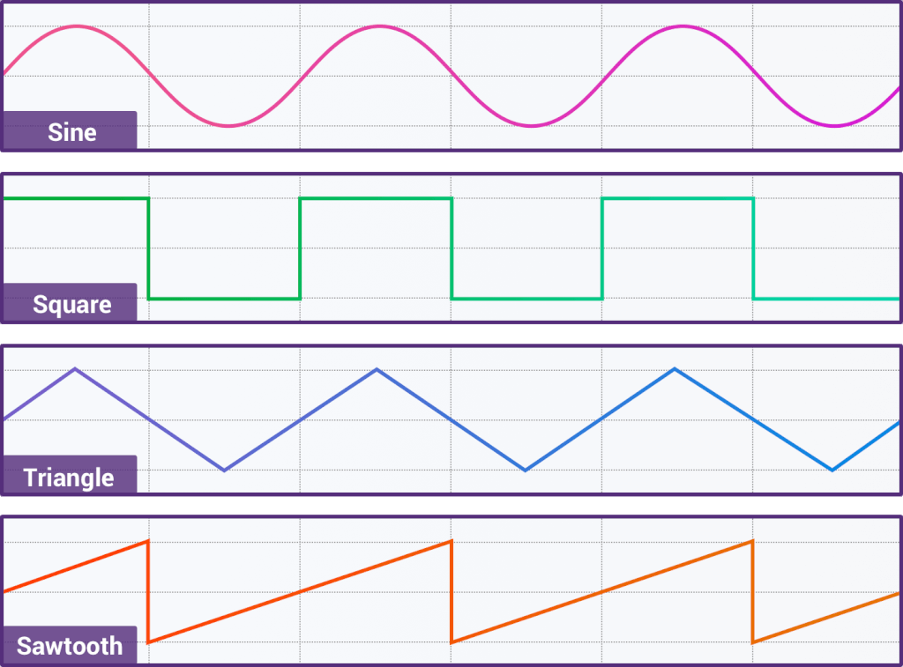

The Web Audio API provides a powerful and versatile system for controlling audio on the Web, allowing developers to choose audio sources, add effects to audio, create audio visualizations, apply spatial effects (such as panning) and much more.
var context = new (window.AudioContext || window.webkitAudioContext)();
Safari requires a WebKit prefix to support AudioContext
Oscillator - mathematically calculated sounds;

The Web Audio API uses OscillatorNode to represent the repeating signal
OscillatorNode.type = 'sine'|'square'|'triangle'|'sawtooth';
Oscillator start
var context = new (window.AudioContext || window.webkitAudioContext)();
var oscillator = context.createOscillator();
oscillator.type = 'sine';
oscillator.frequency.value = 440;
oscillator.connect(context.destination);
oscillator.start();
We need to create a Web Audio API context;
Create an oscillator node within this context;
Select the type of signal;
Set the frequency;
Connect the oscillator;
Run the oscillator;
var context = new (window.AudioContext || window.webkitAudioContext)();
var oscillator = context.createOscillator();
oscillator.type = 'sine';
oscillator.frequency.value = 440;
oscillator.connect(context.destination);
oscillator.start();
var now = context.currentTime;
oscillator.play(now + 1);
oscillator.stop(now + 3);
The AudioBuffer interface represents a short audio asset residing in memory, created from an audio file using the BaseAudioContext.decodeAudioData method, or created with raw data using BaseAudioContext.createBuffer. Once decoded into this form, the audio can then be put into an AudioBufferSourceNode.
class Buffer {
constructor(context, urls) {
this.context = context;
this.urls = urls;
this.buffer = [];
}
loadSound(url, index) {
let request = new XMLHttpRequest();
request.open('get', url, true);
request.responseType = 'arraybuffer';
let thisBuffer = this;
request.onload = function() {
thisBuffer.context.decodeAudioData(request.response, function(buffer) {
thisBuffer.buffer[index] = buffer;
updateProgress(thisBuffer.urls.length);
if(index == thisBuffer.urls.length-1) {
thisBuffer.loaded();
}
});
};
request.send();
};
loadAll() {
this.urls.forEach((url, index) => {
this.loadSound(url, index);
})
}
loaded() {
// what happens when all the files are loaded
}
getSoundByIndex(index) {
return this.buffer[index];
}
}
class Sound() {
constructor(context, buffer) {
this.context = context;
this.buffer = buffer;
}
init() {
this.gainNode = this.context.createGain();
this.source = this.context.createBufferSource();
this.source.buffer = this.buffer;
this.source.connect(this.gainNode);
this.gainNode.connect(this.context.destination);
}
play() {
this.setup();
this.source.start(this.context.currentTime);
}
stop() {
this.gainNode.gain.exponentialRampToValueAtTime(0.001, this.context.currentTime + 0.5);
this.source.stop(this.context.currentTime + 0.5);
}
}
let buffer = new Buffer(context, sounds);
buffer.loadAll();
sound = new Sound(context, buffer.getSoundByIndex(id));
sound.play();
Interfaces for defining effects that you want to apply to your audio sources.
The BiquadFilterNode interface represents a simple low-order filter. It is an AudioNode that can represent different kinds of filters, tone control devices, or graphic equalizers.
The DelayNode interface represents a delay-line; an AudioNode audio-processing module that causes a delay between the arrival of an input data and its propagation to the output.
The GainNode interface represents a change in volume. It is an AudioNode audio-processing module that causes a given gain to be applied to the input data before its propagation to the output.
Once you are done processing your audio, these interfaces define where to output it.
The AudioDestinationNode interface represents the end destination of an audio source in a given context — usually the speakers of your device.
The MediaStreamAudioDestinationNode interface represents an audio destination consisting of a WebRTC MediaStream with a single AudioMediaStreamTrack, which can be used in a similar way to a MediaStream obtained from getUserMedia(). It is an AudioNode that acts as an audio destination.